DESIGN SYSTEM · UX/UI DESIGN · 2026
Cunard is a luxury cruise line with a legacy spanning over 180 years, offering high-end vacations that honor the grand traditions of the early 20th century.
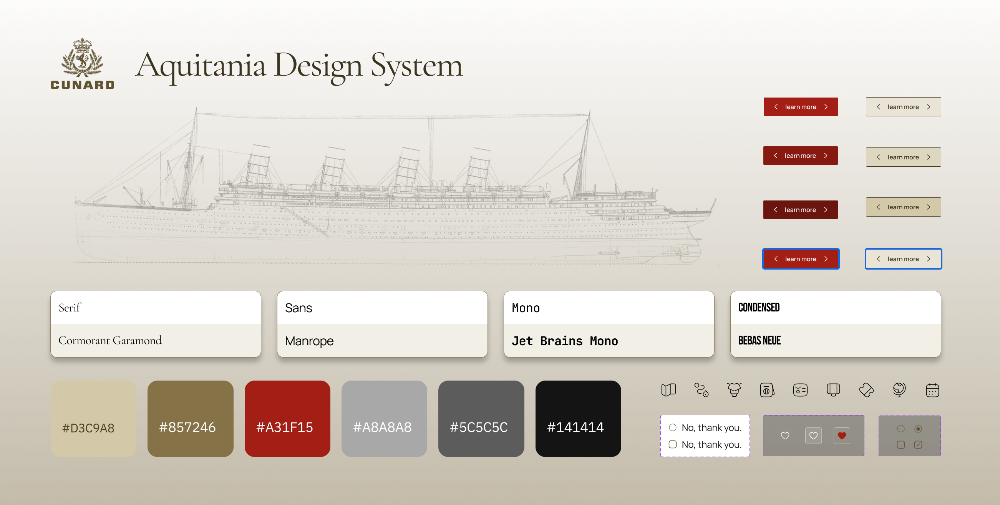
Duration
February – May 2026 (4 months)
Team
4 Product Designers
Skills Used
UI Design, Design System, Usability Testing, Documentation
Tools Used
Figma, Zeroheight
Problem
While Cunard excels at providing passengers with extraordinary experiences to discover the world, its digital experiences fails to reflect that same level of refinement for its customers. Cunard excels at providing passengers with extraordinary experiences to discover the world, but its digital experience fails to reflect that same level of refinement. Users can easily tell it is a travel website; it provides the necessary features to plan a vacation, and the overall functionality works as expected. However, the interface shows inconsistencies that affect the user experience:
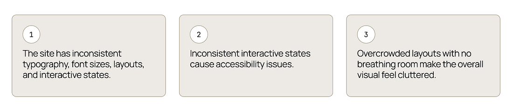
By aligning the digital experience with Cunard's "premium" heritage, we want to evoke the physical and emotional feeling of traveling back in time.
Problem Statement
How might we redefine Cunard's design system to close the gap between its ordinary digital presence and its extraordinary physical journeys?
Solution
The Aquitania Design System is named after the RMS Aquitania, a legendary Cunard ship operated from 1914 to 1950. Affectionately nicknamed "The Ship Beautiful," she was historically unique for serving in both World Wars. In honoring her legacy, our design system aims to ship a similarly beautiful, refined digital experience for Cunard's customers.
We created the Aquitania Design System alongside a comprehensive UI kit and a supporting documentation site to unify, elevate, and standardize Cunard's online experience.
What we built
Design Principles
Aquitania was designed based on four core design principles to resolve existing issues and create a refined, unified design system for our users. By establishing these principles, we developed targeted solutions across the digital experience:
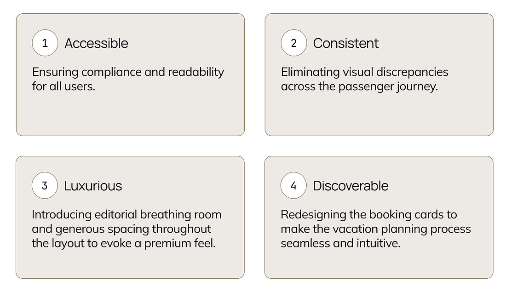
What it looks like with Aquitania?
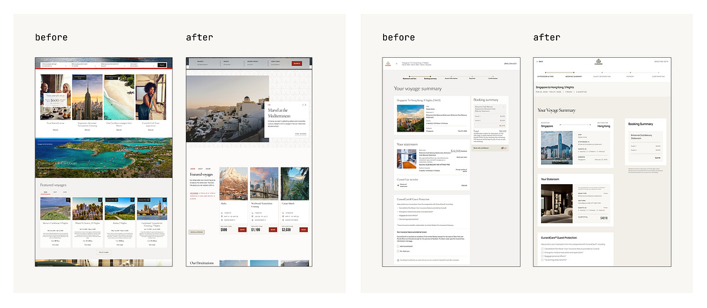
By creating a comprehensive UI Kit and clear system documentation, we successfully transitioned Cunard's digital presence away from clunky, transactional layouts toward an editorial, high-end experience.
Deconstructing the System
Before upgrading the platform to a premium status, we had to sort through the existing ecosystem. We captured screenshots across all pages to perform a comprehensive UI audit, examining every element from the smallest arrow to the largest button. Through this process, we identified critical inconsistencies and accessibility issues, which we viewed as direct opportunities for improvement.
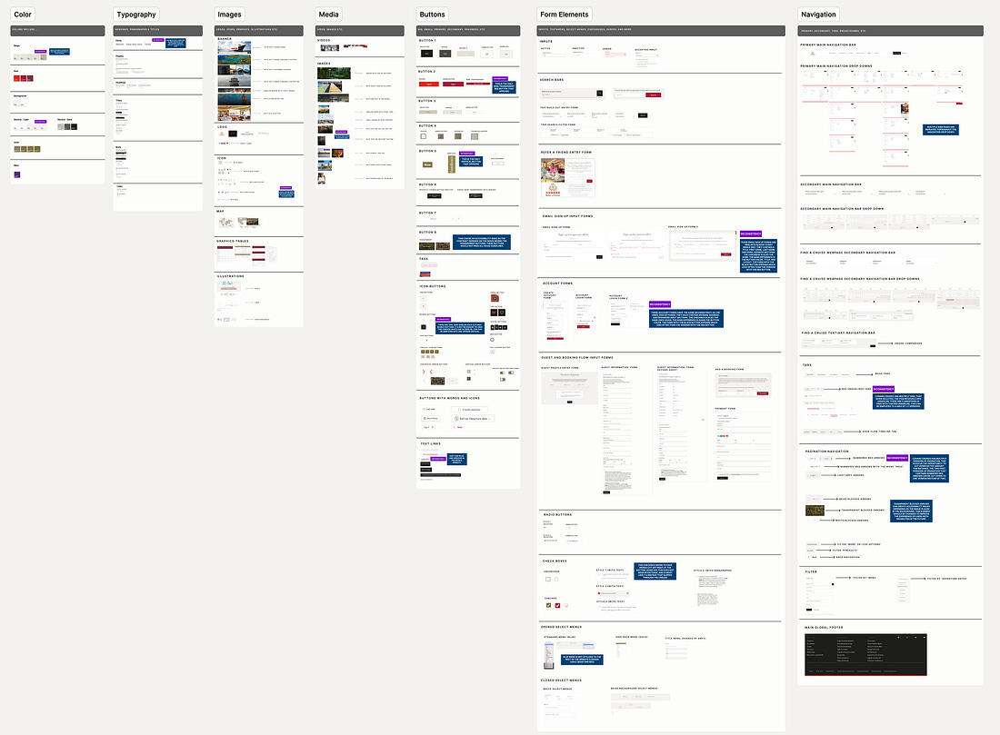
We grouped these elements into 9 categories: color, typography, images, media, buttons, form elements, navigation, blocks, and sections. Through this process, we analyzed these components and identified several key inconsistencies:
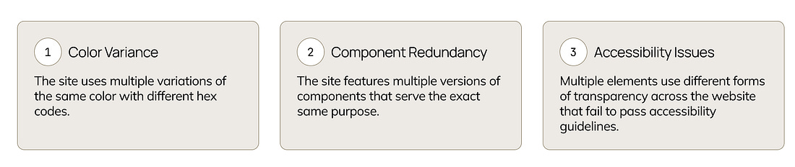
With these gaps clearly defined, we moved forward with the confidence needed to resolve Cunard's foundational issues.
Design Tokens
A great design system requires a solid foundation. We began by establishing our design tokens: color, typography, and spacing. By defining these early on, we ensured that designers could easily make global updates and developers would have a clear, shared language to build from.
Our tokens follow a three-tier pyramid structure:
This structure streamlines design communication. Once established, these tokens became the definitive building blocks for our system.
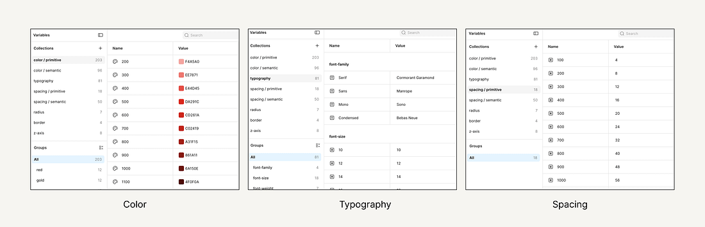
UI Kit
We started by creating our Foundations Library, which defined our core colors, icons, borders, Z-index, and layout grids.
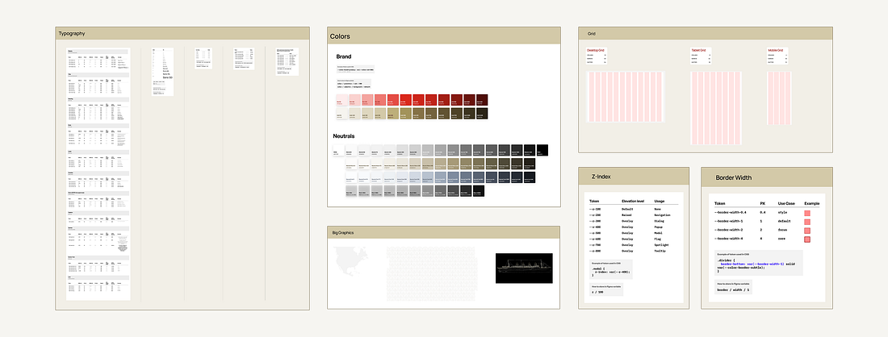
Once the foundations were set, our team brainstormed the visual direction of the website. Through competitive analysis and mood boards, we reimagined the website's aesthetics to define the visual language of our components.
After aligning on the creative direction, we built a comprehensive Component Library derived from our foundations. We transformed these into flexible, reusable elements for the design process, including: buttons, images, Navigation Bars & Tabs, Inputs, Accordion, Cards, Sections, and Carousels.
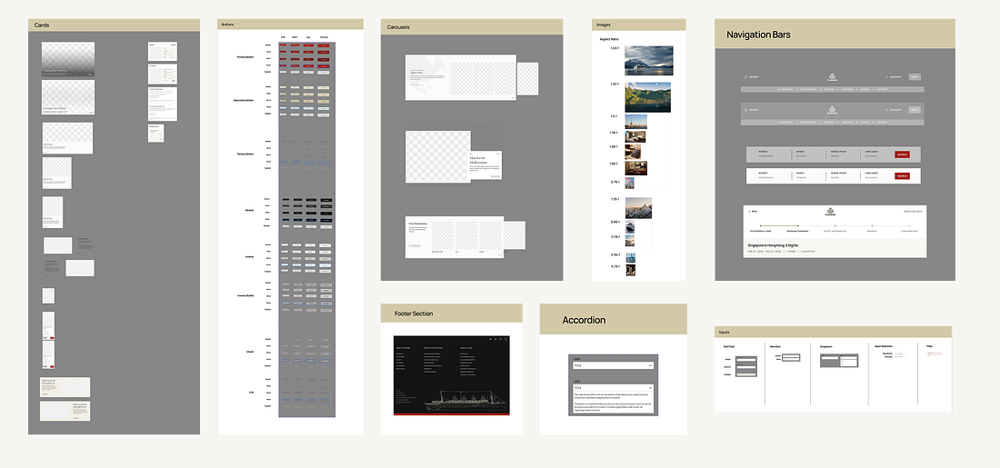
With that, the result was a clean and cohesive UI kit rooted in intentional design decisions and clear principles.
User Testing
We conducted four in-person user tests, asking designers to recreate the homepage using our newly built UI kit. We utilized the "think-aloud" method to understand their cognitive process during the redesign. There are key insights and feedback on both positive and area to improve:
+
Positive. All users successfully recreated the redesigned homepage using the kit.
!
Area to Improve. Users felt overwhelmed by the sheer volume of information included in the UI kit, noting that it felt overly complex. They suggested adding clear guidelines and instructions to improve usability.
This feedback highlighted a crucial lesson: a UI kit is only as good as the guidance that accompanies it.
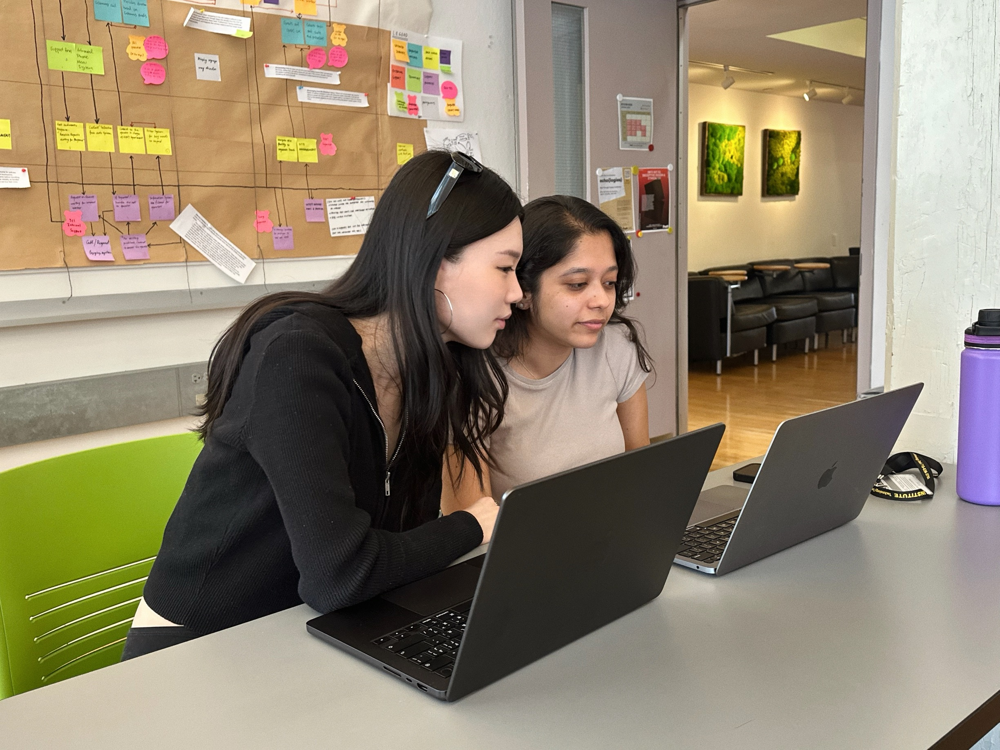
The Living Handbook
With the completed UI kits and valuable feedback, we came to understand the importance of providing a guideline for our users.
A design system is more than just a collection of UI components. Documentation provides the necessary context, accessibility guidelines, and best practices required to use the system correctly. We chose Zeroheight as our documentation platform for its straightforward, purpose-built approach to managing design systems.
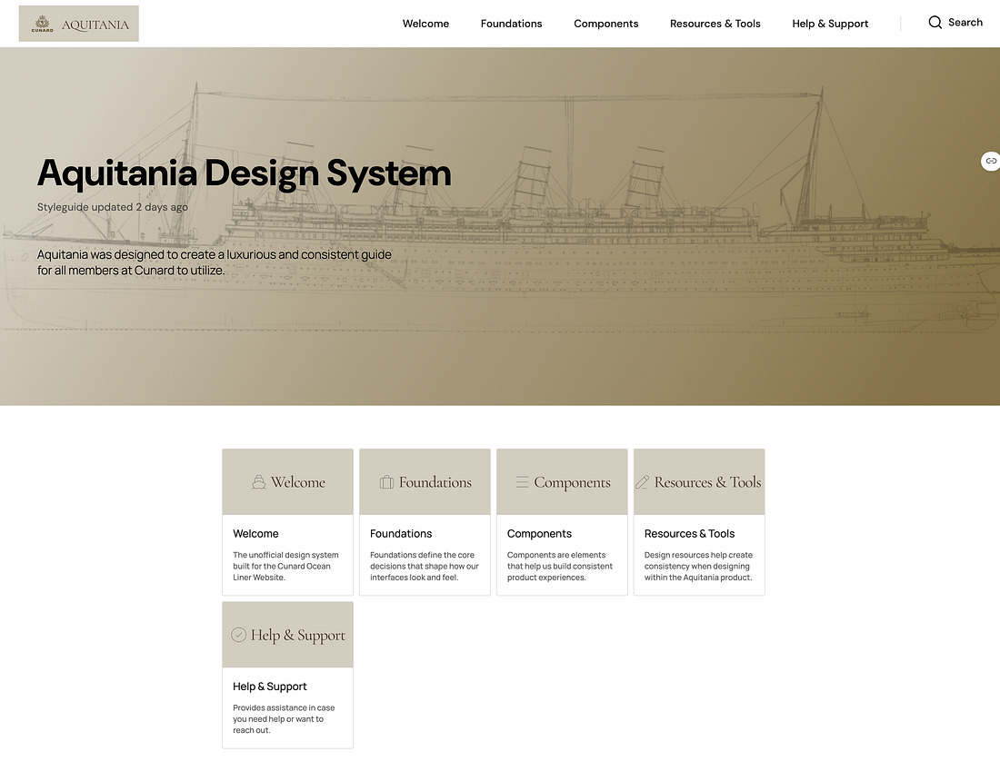
Outcome
We pitched the Aquitania Design System to our stakeholders, communicating not just what we built, but why a design system is a critical business asset. We demonstrated how Aquitania strengthens Cunard's brand identity, improves long-term development efficiency, and preserves design value over time.
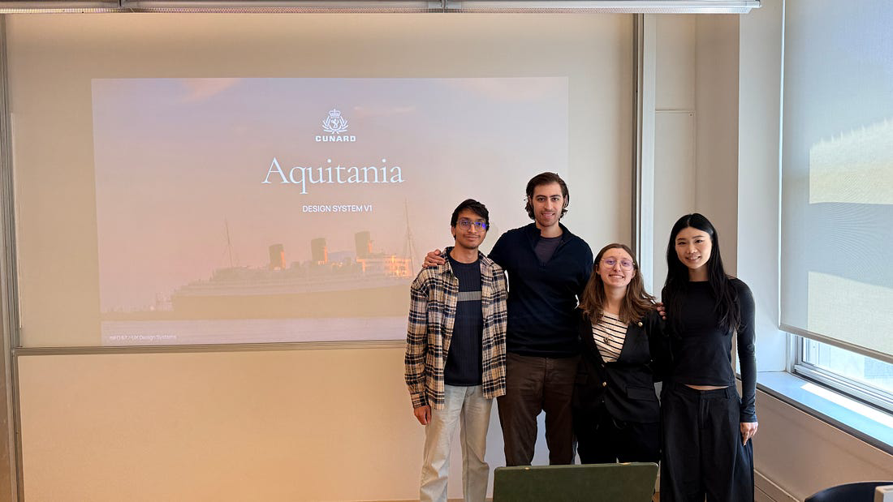
Key Lessons & Reflections
"Design systems are cultural changes disguised as UI Kits." — LAUREN LOPRETE
Looking back, this quote deeply resonates with my experience. Building a design system is never just about the UI components; it is a long-term, evolving commitment to collaboration and quality. This project gave me a profound appreciation for taking a product from 0 to 1. Every step came with a steep learning curve, requiring meticulous consideration for the end user — the lessons I will carry with me into my future practice.